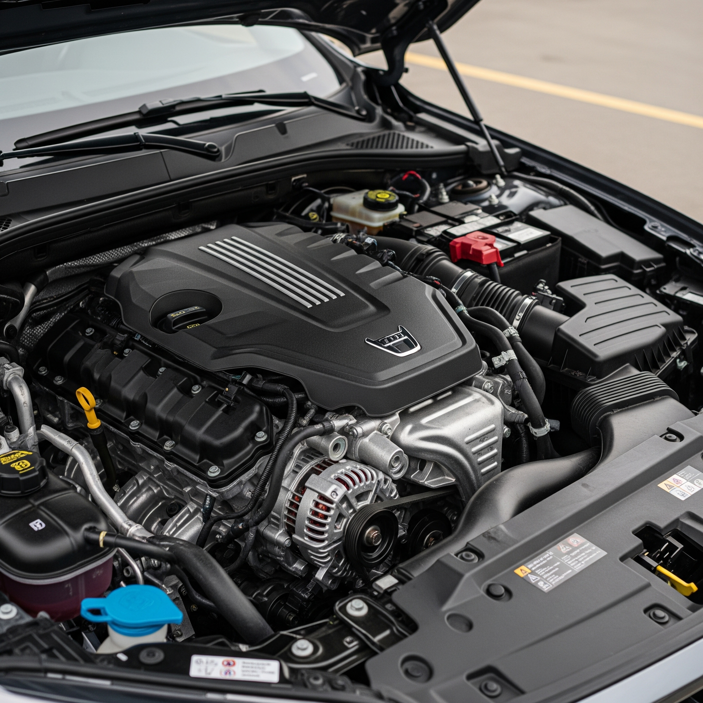
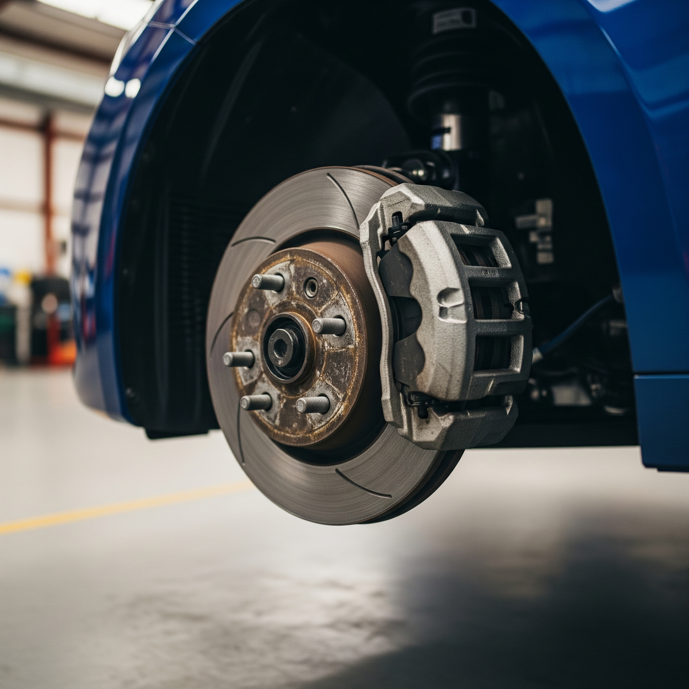

Sobre a Rugido do Motor
Com mais de 15 anos de experiência no mercado automotivo, Rugido do Motor se orgulha de oferecer um serviço de excelência e confiança. Nossa equipe de mecânicos certificados está pronta para diagnosticar e solucionar qualquer problema no seu veículo, utilizando equipamentos de última geração e peças de alta qualidade.
Nossa missão é garantir a sua segurança e a performance do seu carro, com transparência e um atendimento personalizado.
Nossos Principais Serviços

Revisão Completa
Manutenção preventiva e corretiva para garantir a segurança e o desempenho do seu veículo.

Sistema de Freios
Verificação e troca de pastilhas, discos e fluidos para uma frenagem segura.

Suspensão e Alinhamento
Serviços de alinhamento, balanceamento e reparo da suspensão para mais conforto.
Tabela de Serviços
| Serviço | Descrição Resumida | Preço (a partir de) |
|---|---|---|
| Troca de Óleo e Filtro | Utilizamos óleos de alta qualidade para o motor do seu carro. | R$ 150,00 |
| Alinhamento e Balanceamento | Ajuste da geometria da suspensão e balanceamento das rodas. | R$ 120,00 |
| Injeção Eletrônica | Diagnóstico computadorizado e limpeza de bicos injetores. | R$ 200,00 |
| Revisão de Ar Condicionado | Limpeza do sistema e recarga de gás. | R$ 180,00 |
Por que escolher a Rugido do Motor?
- Profissionais certificados e experientes.
- Equipamentos de última geração para diagnósticos precisos.
- Orçamento transparente e sem surpresas.
- Garantia de 3 meses em todos os serviços.
- Sala de espera confortável com Wi-Fi e café.